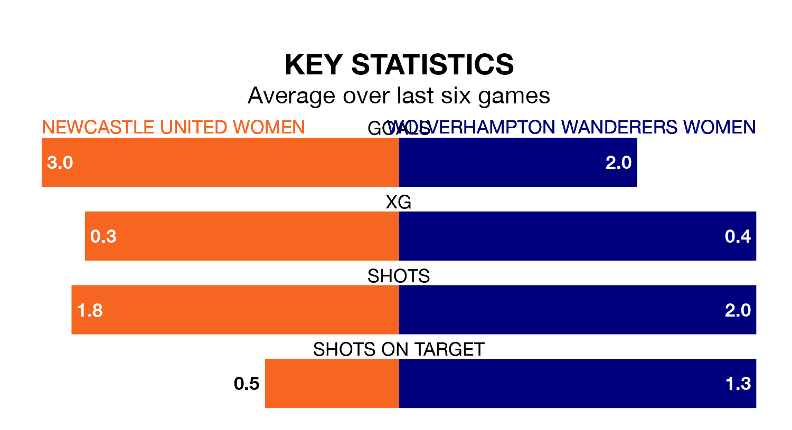

Women's National League Premier Division North's two meanest defences go head-to-head on Sunday, when Newcastle United Women host Wolverhampton Wanderers Women.
No teams have conceded fewer goals than Newcastle United to date: the home side have let in just four goals in 12 games.
Wolverhampton Wanderers have conceded seven goals in 10 games, giving them the second tightest back line so far this season.
Newcastle United are top of the table after 12 games, of which they have won nine and drawn three, earning 30 points.
Wolverhampton Wanderers are four places behind the home team in fifth, with five wins and three draws putting them on 18 points.
Newcastle United are in good form in Women's National League Premier Division North, with four wins and two draws from their last six games.
With three wins and two draws over that period, the visitors' form is worse – they have taken 11 points from 18, compared to Newcastle United's 14.
Newcastle United's last match was on January 21, a 0-0 draw against Nottingham Forest Women.
Wolverhampton Wanderers drew 0-0 with Stoke City Women last time out, on January 28.
Updated: 10:03 (UTC), 30/01/24